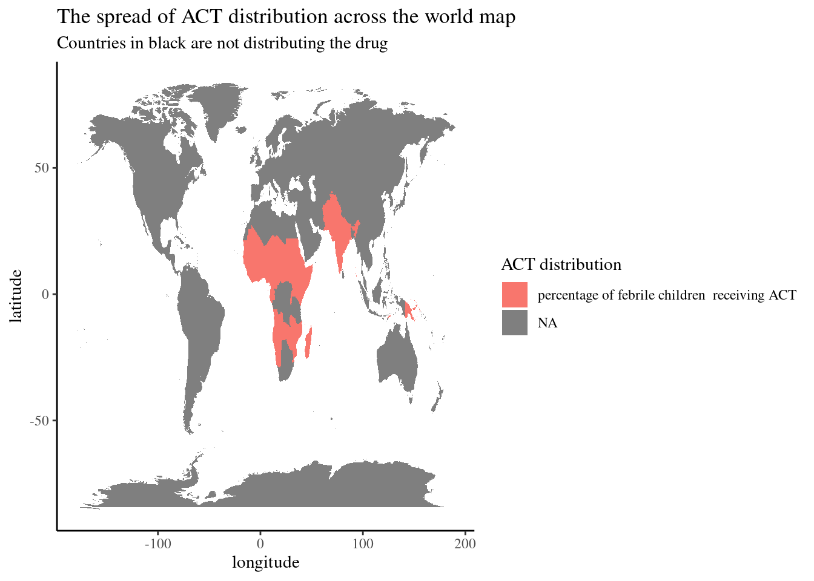
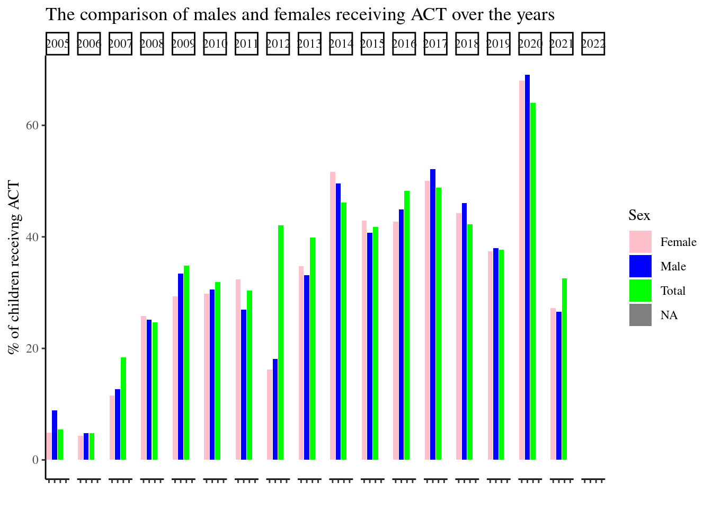

R report MT5000 Justin Leonard
The analysis of the evolution of ACT distribution
Introduction
This compilation of visualisations looks at the evolution of the distribution of ACT to febrile children (under the age of 5) both male and female, ACT is a first line anti malarial drug.
- The first visualisation shows the spread of the distribution of ACT across the world map.
- The second visualisation allows us to see the evolution of life expectancy across the world.
- Thirdly we see the relationship of ACT distribution and GDP per capita.
- Finally, the bar chart gives us an insight into the comparison of distribution to males and females.
World Map
Time series chart
This visualisation of the time-series chart allows us to see how life expectancy has changed over the years. The countries receiving ACT have a particularly low age of life expectancy compared to the more developed countries across the world. An assumption that can be made in relation to this stat is that diseases like Malaria may affect the countries overall life expectancy.
Scatter plot

Bar chart

Conclusion
This display of visualisations gives us a helpful insight into the evolution of the distribution of ACT to febrile children across the world. It’s obvious from the visualisations that these countries are developing in comparison to the rest of the world. Factors such as GDP per capita and life expectancy give us this insight. ACT distribution however does show to be equal in these countries between males and females suggesting that there is no preferential treatment to a specific gender.
```